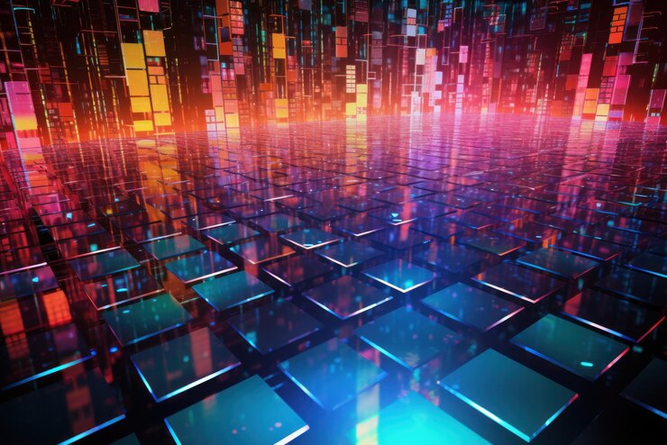
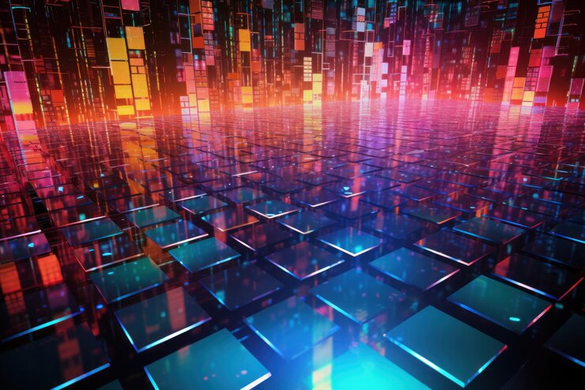

With the beginning of the digital revolution, we live in a time where we have a lot of
information at our disposal, in our another article we talked about in what kind of
information we can trust? In this article we will talk about the information in the current
world.
information it has become in a valuable resource, in our life the information about our
country, international things, the information can change our thoughts, ideas and our
behavior,
The information is a power, can give to the persons the necessary knowledge to make
decisions on political issues, finance, health, purchases, etc. it's impact in the society is
obvious the information has created awareness and through the social medias has displayed
social problems.
The media has a main role in the difussion, filtering and presentation of the information
in the current society, there are many ways of difussion like papers, magazines, TV channels
and news websites.
Due to It's impact on people, the media must have a certain of sense morality and ethics, must
be impartially and balanced, journalistic objectivity is an important factor when informing the
the population, the media has the power about what information to present.
We live in great days but there is a big challenge called “disinformation” and “fake news”
often the fake news can create divisions between the people also has impact in the
decision making, the medias have really carefully at the moment to spread the
information, because they have the “power”.
In conclusion the information is really valuable in the digital age, and has a great impact in
our lives, we have a lot of information, and for this reason there is a main antagonist called
“disinformation” so people and principally the media like diffusers of information needs to
be careful with what kind of information they are treating.

 
